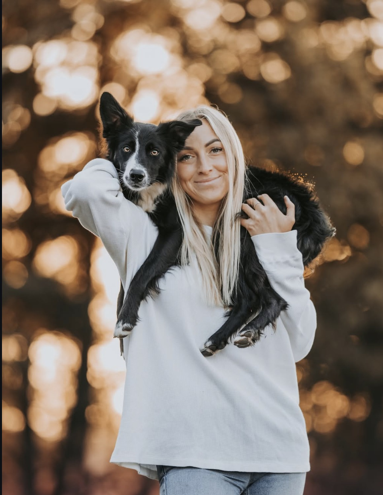

Jestem behawiorystką i trenerką psów we Wrocławiu. Uczę psy i ich opiekunów lepszej komunikacji — metodami pozytywnego wzmacniania, bez kar, krzyku i przymusu.

Od pierwszej wiadomości do spokojniejszych spacerów — tak zwykle wygląda nasza współpraca.
Od pojedynczej konsultacji po długofalową pracę z trudnymi zachowaniami — wybierz to, czego teraz potrzebujecie.
Kilka historii psów i ich ludzi, z którymi miałam przyjemność pracować.
Więcej krótkich porad, nagrań z treningów i psich historii publikuję na Instagramie.
Krótkie, praktyczne wskazówki o komunikacji z psem — bez straszenia, za to z konkretami.
Napisz kilka słów o swoim psie — odezwę się i wspólnie ustalimy dalsze kroki.
| Pon – Pt | 9:00 – 19:00 |
| Sobota | 10:00 – 14:00 |
| Niedziela | zamknięte |